मान लो थे एक किसान हो अर बाजरी उगाओ हो। थे घणा साल सूं खेती कर रया हो। थाणे ठा है कि जद जून में हवा एक ख़ास तरियां चाले, तो इणरो मतलब मानसून आवण वालो है। आ बात थे कोई किताब में कोनी पढ़ी; आ थे आपरे अनुभव (Experience) सूं सीखी है। थे आ निशानी पेली भी कई बार देखी है, शायद कई पीढ़ियों सूं, अर जद थे सीख्यो कि इणरो काईं मतलब है। आर्टिफ़िशियल इंटेलिजेंस (Artificial Intelligence) या AI भी एक कंप्यूटर री तरियां है जिको थारे जियां ही अनुभव सूं सीखे है। बादळां ने देखण री बजाय, आपां कंप्यूटर ने हज़ारों फोटो दिखावां, या हज़ारों कहाणियाँ सुणावां। अगर आपां इने अच्छी बाजरी अर बीमार बाजरी री घणी फोटो दिखावां, तो ओ बीमारी ने पिछाणणो सीख जावे। अगर आपां इने आपरा मारवाड़ी गीत सिखावां, तो ओ आपरी भाषा समझणो सीख जावे। आपां इने कंप्यूटर ने "ट्रेनिंग (Training)" देणो केवा। एक बार जद ओ ट्रेन हो जावे, तो ओ आपाणे काम छेती करण में मदद कर सके है, जियां खेत में फैल्ण सूं पेली ई कीड़े ने पिछाणणो, या डॉक्टर ने एक मुश्किल एक्स-रे (X-ray) समझण में मदद करणो।
बुनकर रो उदाहरण
या पछे, सालावास रे कोई दरी बुनकर रे बारे में सोचो। बुणणो शुरू करण सूं पेली ई थाणे दरी रो डिज़ाइन ठा होवे क्यूंकि थे इने आपरे मन में हज़ारों बार देख्यो है। AI भी डेटा (Data) में एड़ा ही "पैटर्न (Patterns)" ढूँढण री कोशिश करे है—चाहे वो बारिश रो पैटर्न होवे, बीमारी फैल्ण रो पैटर्न होवे, या कोई बात में शब्दां रो पैटर्न होवे।
अब, सोचो कि शहर सूं एक आदमी थारे खेत माथे आवे। वो थाणे एक नयो हल देवे। ओ चमकदार अर महंगो है। पण जद थे इने काम में लेवण री कोशिश करो, तो ओ थारे ऊंट रे वास्ते घणो भारी होवे, अर थारी पथरीली ज़मीन में इणरो फल टूट जावे। उण आदमी ने इने थारे खेत माथे आए बिना ही फैक्ट्री में बणा दियो। उणने थारसू कोनी पूछ्यो कि थाणे काईं चाइजे। तकनीक (Technology) रे साथे घणी बार एड़ो ही होवे। पार्टिसिपेटरी डिज़ाइन (Participatory Design) इणरो उल्टो है। इणरो मतलब है कि औज़ार बणावण वालो पेली थारे गाँव आवे। वे पूछे: "थाणे काईं दिक्कत आवे?" "थे हल कियाँ पकड़ो?" "मिट्टी कैसी है?" पछे, थे मिलर औज़ार बणाओ। जद आपां AI ने इण तरियां बणावा, तो ओ आपरे गाँव, आपरी भाषा अर आपरे जीवण रे तरीके रो मान राखे। ओ आपरे वास्ते (for) नी, बल्कि आपरे साथे (with) बणायो जावे।
II. AI आपरे गाँव री मदद कियाँ कर सके (काम में लेवण रा तरीका)
2.1 सेहत (Health)
बीमारी होवण सूं पेली ई बीरो पतो लगाणो
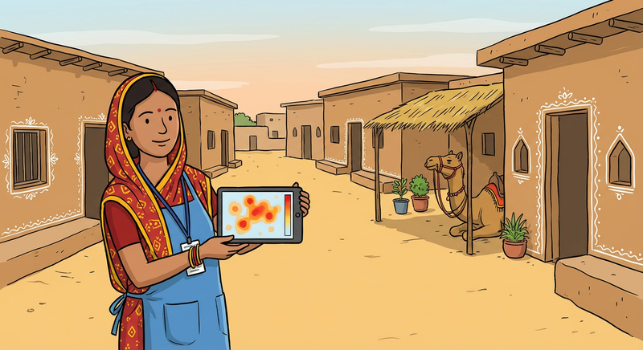
दूर-दराज़ रे इलाकों में जठे अस्पताल पहुँचणो मुश्किल होवे—काफ़ी हद तक आपरी रेगिस्तानी ढाणियों री तरियां—तकनीक रो इस्तेमाल करके आपात स्थिति (Emergency) रे गंभीर होवण सूं पेली ई बीरो अंदाज़ो लगा'र जान बचाई जा रयी है। उदाहरण रे वास्ते, अलास्का में, समुदायों ने एक एड़ो सिस्टम (System) बणावण में मदद की जिको पेली ई बता देवे कि कद एयर एम्बुलेंस री ज़रूरत पड़ेगी, ताकि मदद पेली सूं तैयार रवे [1]। इणी तरियां, "सेप्सिस वॉच (Sepsis Watch)" नाम रो एक टूल एक होश्यार दाई री तरियां काम करे जिकी छू'र ही बुख़ार रो पतो लगा लेवे; ओ डेटा (Data) रो इस्तेमाल करके डॉक्टरां ने ख़तरनाक संक्रमणों (Infections) ने छेती पिछाणण में मदद करे, जिण सूं वे तुरंत इलाज कर सके [2]। ए टूल पेट सूं माताओं अर टाबरां री सेहत माथे नज़र राखण में भी मदद कर रया है, अर आपाणे मलेरिया जैसी बिमारियों रे फैल्ण रे बारे में चेतावनी देवे ताकि आपां आपरे परिवारां ने सुरक्षित राख सका [3, 4]。
गाँव वाला ई पहरेदार
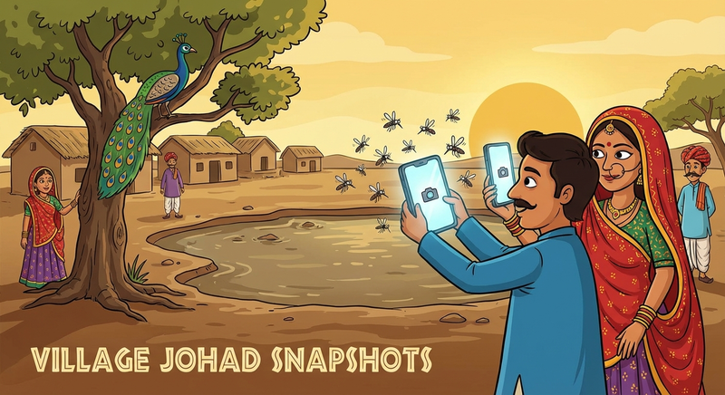
गाँव वाला खुद बीमारी रे खिलाफ रक्षा री पहली पंक्ति बण सके। "मॉस्किटो अलर्ट (Mosquito Alert)" प्रोजेक्ट में, गाँव वाला मच्छरों री फोटो लेवण रे वास्ते आपरे फ़ोन रो इस्तेमाल करे, जिण सूं AI ख़तरनाक मच्छरों री पिछाण कर सके। इण सूं पूरे गाँव ने पतो चाल जावे कि कठे दवाई छिड़कणी है या ध्यान राखणो है, ओ एक एड़ो तरीको है जिणरो इस्तेमाल आपां आपरे जोहड़ों री निगरानी रे वास्ते कर सका [5]। इणरे अलावा, ओ पक्को करके कि चिकित्सा अनुसंधान (Medical Research) में सगळा ने शामिल करियो जावे, आपां ओ पक्को कर सका कि नई दवाइयाँ अर इलाज आपरे लोगान् रे वास्ते भी काम करे, न कि सिर्फ़ शहरां में रेवण वालो रे वास्ते [6]。
आपरी खुद री भाषा में बढ़िया देखभाल
सेहत री सेवा जद सबसूं ज्यादा असरदार होवे जद वा समझ में आवे। "हेल्थवाणी (HealthVaani)" जैसे टूल अब आशा (ASHA) दीदियों जैसे फ्रंटलाइन वर्कर्स (Frontline Workers) ने सिर्फ़ हिंदी या अंग्रेज़ी में नी, बल्कि उणा री आपरी देसी भाषा में सेहत सूं जुड़ी जानकारी दे रया है [7]। ओ तरीको मानसिक स्वास्थ्य (Mental Well-being) रे वास्ते भी अपनायो जा रयो है; रिफ्यूजी कैंप में जठे घणा कम डॉक्टर है, AI "चैटबॉट (Chatbots)" सुणण वाळे री भूमिका निभावे अर परेशान लोगां ने सहारो देवे [8]। सबसूं ज़रूरी बात, "ग्लोबल मेंटल हेल्थ डेटाबैंक (Global Mental Health Databank)" जैसी नई कोशिश जवानां ने आपरे सेहत डेटा (Data) माथे कंट्रोल (Control) राखण री आज़ादी दे रयी है, जिण सूं उणा री निजता (Privacy) रो मान रेवे [9]。
2.2 आफत (Disasters)
मुसीबत रो जवाब देणो
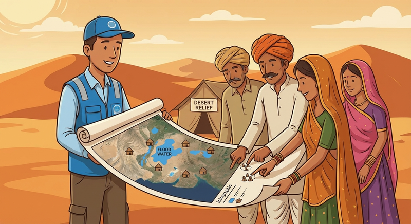
जद आफत आवे, तो गाँव रो ज्ञान अक्सर कच्चे डेटा (Raw Data) सूं ज्यादा समझदार साबित होवे। इथियोपिया में, कंप्यूटर शरणार्थियों रे आवण-जावण रो अंदाज़ो लगावण में फ़ेल हो गया जद तक कि गाँव वालो ने ओ नी बतायो कि बकरियों री कीमत सबसूं ज़रूरी इशारा होवे—जद कीमत गिरती थी, तो इणरो मतलब हो कि लोग जावण रे वास्ते आपरा रेवड़ बेच रया था [2]। इणी तरियां, असम में, नदी रे किनारे रेवण वालो रे साथे मिलर बाढ़ री चेतावनी देण वालो एक टूल बणायो गयो। ओ पाणी चढ़ण सूं पेली ई सगळा ने चेतावनी देवण रे वास्ते उणा री भाषा अर नदी री उणा री गहरी समझ रो इस्तेमाल करे, ठीक उश्याँ ही जियां आपाणे पतो होवे कि आपरी ज़मीन माथे किसो खड़ीन भर सके [7]。
नुकसान रो अंदाज़ो लगाणो
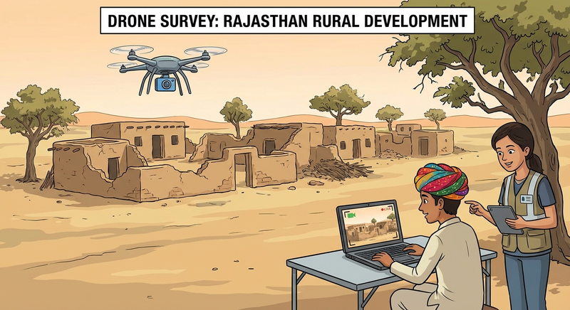
तूफ़ान या भूकंप रे बाद, ओ जाणणो घणो ज़रूरी होवे कि मदद री सबसूं ज्यादा ज़रूरत कठे है। सैटेलाइट (Satellites) आसमान सूं फोटो ले सके, अर AI इन फोटुआं ने देख'र हाथों-हाथ पतो लगा सके कि किस्या घर टूटा है। इण सूं बिना कोई देरी रे मदद सीधे सही जगह माथे भेजी जा सके है। [8]。
2.3 आपरी धरती री सुरक्षा (Environment)
गंदगी रो पतो लगाणो
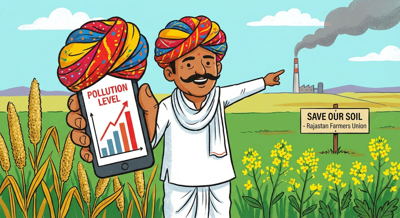
आपां गंदगी फैलावण वालो ने ज़िम्मेदार ठहरावण रे वास्ते तकनीक रो इस्तेमाल कर सका। एक शहर में, रेवण वालो ने "बदबू" री शिकायत करण रे वास्ते एक ऐप (App) रो इस्तेमाल कियो, जिने AI ने हवा रे डेटा (Data) रे साथे मिला'र ठीक उण फैक्ट्री रो पतो लगायो जिकी गंदगी फैला रयी थी। एक दूसरे मामले में, लोगां ने वीडियो में फैक्ट्री री चिमनियों सूं निकलतो धुएं ने पिछाणण में कंप्यूटर ने सिखावण में मदद की। ओ "स्मोक वॉच (Smoke Watch)" AI, उण समुदाय ने ओ साबित करण री ताकत देवे कि उणा री हवा ने कुण ख़राब कर रयो है [5]。
धरती री सार-संभाल
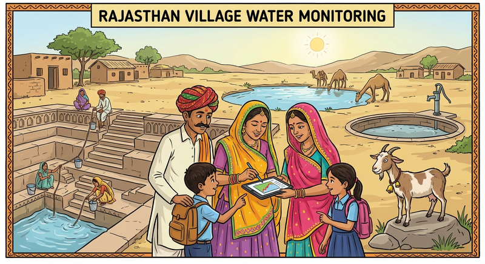
तकनीक आपरे भविष्य रे वास्ते बढ़िया योजना बणावण में भी आपरी मदद कर सके। कुछ शोधकर्ता (Researchers) गाँव वालो रे साथे मिलर ओ समझण रो काम कर रया है कि पाणी रे पाइप अर बिजली रे खंभों री सबसूं ज्यादा ज़रूरत कठे है, अर वे AI रो इस्तेमाल करके एड़ा रास्ता बणा रया है जिको बठे रेवण वालो रे वास्ते सही होवे [3]। ओ "बायोरीजनलिज़्म (Bioregionalism)" ने बढ़ावा देवे, जिणरो मतलब है आपरी बाप-दादा री ज़मीन—आपरी मिट्टी, आपरो पाणी, आपरा पेड़-पौधे—ने समझणो अर बीरी सुरक्षा अर देखरेख रे वास्ते तकनीक रो इस्तेमाल करणो, न की कणी रे अनोखे पर्यावरण माथे "सगळा रे वास्ते एक जैसो" पैमानो थोपणो [10]。
2.4 आपरी भाषा ने ज़िंदा राखणी (Language)
कंप्यूटर ने आपरी तरियां बोलणो सिखाणो
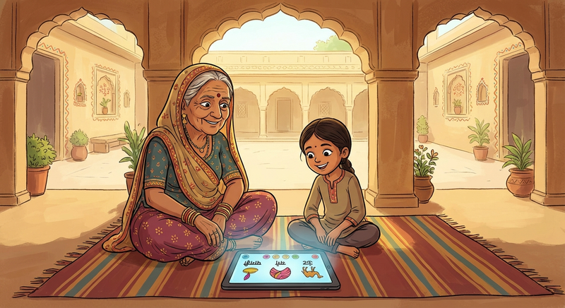
आपां एक एड़ो आंदोलन देख रया हाँ जिको ओ पक्को करे कि डिजिटल दुनिया में आपरी भाषाओं ने जगह मिले। अफ़्रीका में, मसाखाने (Masakhane) समुदाय ने तय कियो कि कंप्यूटरों ने अफ़्रीकी भाषाएँ बोलणी चाइजे, अर उणा ने 30 सूं ज्यादा भाषाओं रो अनुवाद करण रे वास्ते आपरा ख़ुद रा टूल बणाया [11, 12]। आपरे घर रे नज़दीक, भाषिनी (Bhashini) पहल लोगां ने आपरी आवाज़ दान करण रो मौका देवे, जिण सूं एक "डिजिटल पब्लिक लाइब्रेरी (Digital Public Library)" बणे जिकी कंप्यूटर ने भारतीय भाषाओं ने समझण में मदद करे [7]। बुज़ुर्ग भी मुँह जुबानी कहाणियाँ ने रिकॉर्ड करण रे वास्ते शोधकर्ताओं रे साथे काम कर रया है, अर इन रिकॉर्डिंग ने सही ढंग सूं राखण रे वास्ते AI रो इस्तेमाल कर रया है ताकि पुराने टेम रो ज्ञान आवण वाले पोते-पोतियों रे वास्ते सुरक्षित रवे [13]。
सीखण रा नया तरीका
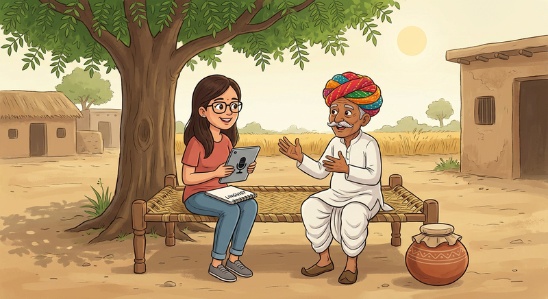
एड़ा नया टूल डिज़ाइन (Design) किया जा रया है जिको सिर्फ़ लोगां सूं "बात" करके ही भाषा सीख सके, उणा ने हज़ारों लिखी किताबों री ज़रूरत कोनी होवे। ओ उण भाषाओं रे वास्ते ख़ास तौर माथे अच्छो है जिकी ज़्यादातर बोली जावे [14]। "स्पार्स ट्रांसक्रिप्शन (Sparse Transcription)" जैसे तरीके उण भाषाओं ने लिखण में भी मदद कर रया है जिने पेली कदे नी लिख्यो गयो, ताकि कोई भी भाषा पाछे न छूट जावे [15, 16]。
2.5 सही अर न्याय (Fairness & Justice)
कंप्यूटर रे काम री जाँच करणी
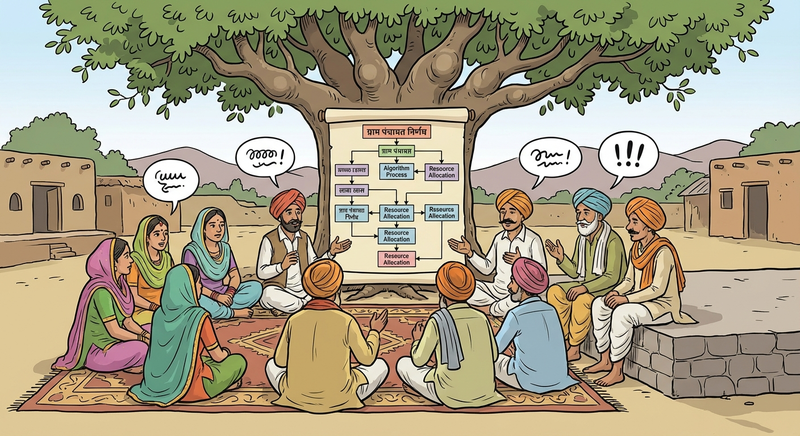
आपाणे ओ पक्को करणो पड़ेला कि कंपनियां अर सरकारों द्वारा काम में लिया जावण वाळा कंप्यूटर आपरे साथे सही व्यवहार करे। उबर (Uber) जैसे ऐप्स (Apps) रे ड्राइवरों ने ओ जाँचण रे वास्ते डेटा (Data) रो इस्तेमाल कियो कि काईं उणा ने सही पइसो मिल रयो है या कंप्यूटर उणा ने धोखो दे रयो है [17]। इणी तरियां, विकलांग लोगां ने चेहरे पहचानने वाले कैमरों (Face-recognition cameras) रो टेस्ट करके दिखाओ कि तकनीक उणा ने ठीक सूं "देख" नी पा रयी थी, जिण सूं कंपनियों ने आपरी गलती मानणी पड़ी अर उने ठीक करणो पड्यो [17]。
सरकार अर सुरक्षा
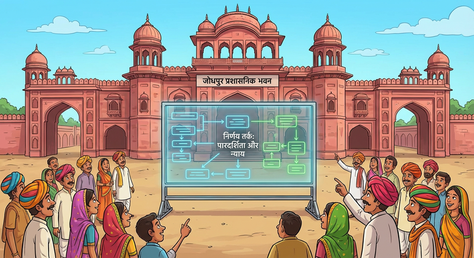
गाँव वाला इण बात माथे कंट्रोल (Control) कर रया है कि फ़ैसले कियाँ लिया जावे। एक प्रोजेक्ट में, लोगां ने वोट दे'र तय कियो कि कंप्यूटर ने खाणो बांटण रो काम कियाँ करणो चाइजे, ओ पक्को करते हुए कि मदद सबसूं पेली सबसूं भूखे परिवारां ने मिले [2]। AI टूल रो इस्तेमाल इंटरनेट री निगरानी करण अर लुगाइयां रे ख़िलाफ़ होवण वाली धमकियों ने ढूँढण अर रोकण रे वास्ते भी करियो जा रयो है, जिण सूं ऑनलाइन जगहें सगळा रे वास्ते सुरक्षित बण सके [8]। कुछ शहरां ने तो "एल्गोरिद्म रजिस्टर (Algorithm Registers)" भी बणाया है, जिको सरकार द्वारा काम में लिया जावण वाळा सगळा कंप्यूटर प्रोग्रामों री सार्वजनिक लिस्ट है, ताकि आम लोग उणा री जाँच कर सके [9]。
2.6 खेती अर पढ़ाई (Farming & Education)
बढ़िया खेती
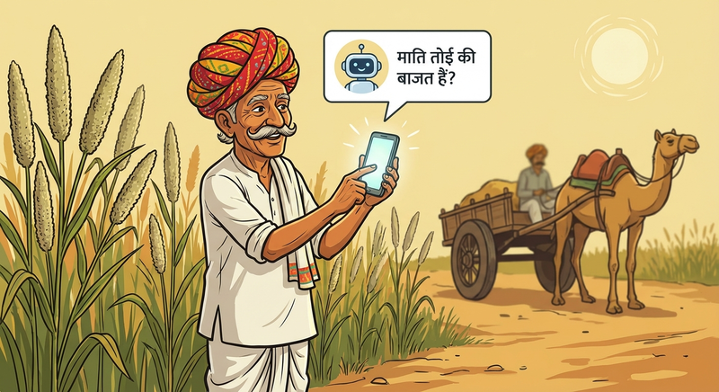
एक "बोलने वाले कंप्यूटर" री कल्पना करो जिण सूं थे आपरी भाषा में बात करके कीड़ों, मौसम या भाव रे बारे में पूछ सको। "फार्मरचैट (FarmerChat)" बिल्कुल ओ ही करे, ओ बोल'र जवाब देवे ताकि थाणे टाइप (Type) न करणो पड़े [7]। मेक्सिको में, एक गाँव ने वैज्ञानिकों रे साथे मिलर एक एड़ो सिस्टम (System) बणायो जिको पौधों अर खेती रे बारे में उणा रे पुराने ज्ञान ने याद राखे। ओ पक्को करे कि बड़ों रो ज्ञान सुरक्षित रवे अर उणा रे गुज़र जावण रे बाद खो न जावे [18]。
बढ़िया स्कूल
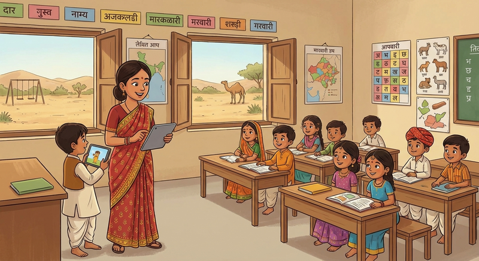
तकनीक आपरे टाबरां ने सीखण में भी मदद कर रयी है। महाराष्ट्र में, मास्तरां ने एक एड़ो टूल बणावण में मदद की जिको टाबरां ने ज़ोर सूं पढ़ता थका सुणे अर मास्तर ने ठीक-ठीक बतावे कि किस टाबर ने ज्यादा मदद री ज़रूरत है [7]। मेक्सिको में, एक सिस्टम (System) मास्तरां ने चेतावनी देवे कि अगर कोई टाबर स्कूल आवे बंद करन वालो है, तो मास्तर उणरे छोड़ण सूं पेली ई परिवार सूं मिल सके अर मदद री बात कर सके [8]。
III. खतरा: आपां ने किन बातां रो ध्यान राखणो है
3.1 आपरी कहाणियाँ रो खो जावणो (Cultural Erasure)
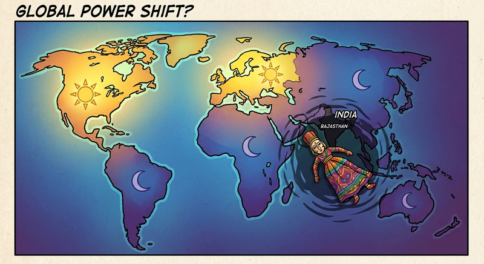
एक मोटो खतरो ओ है कि अगर कंप्यूटर ने सिर्फ़ विदेशी किताबों रे ज्ञान सूं ही ट्रेनिंग (Training) दी गयी, तो उने पतो ही कोनी चाले कि आपां भी इण धरती माथे हाँ। आपां दुनिया रे वास्ते गायब हो जावांला, अर आपरो इतिहास, गणगौर या तीज जैसे त्यौहार, अर आपरा नायक भुला दिया जावेला [19]। अठे तक कि जद वो विदेश में बण्योड़ो AI आपाणे देखे भी है, तो शायद वो सिर्फ़ "एक ही कहाणी" जाणे, कि सगळा गाँव "गरीब" या "गंदा" है। अगर कोई टाबर कंप्यूटर सूं गाँव दिखावण रे वास्ते केवे अर वो सिर्फ़ गरीबी दिखावे, तो वो टाबर गलत सबक सीखे [19]। इण सूं ना केवल टाबर गाँव सूं बढ़िया जगह ढूँढण लागे, बल्कि उणरे समझण रो तरीको ही ग़लत रूप सूं असरदार हो जावे। इने "एपिस्टेमिक वॉयलेंस (Epistemic Violence)" केवे, यानी की आपरे जाणण रे तरीके ने ही चोट पहुँचाणो। पश्चिमी कंप्यूटर सीधी लकीरां में लिखी चीज़ें पसंद करे, पण आपरो ज्ञान फड़ चित्रों, गीतों या दरी रे पैटर्न री तरियां घणी परतों में छिप्यो हो सके। आपरे ज्ञान ने उणा रे बक्सों में जबरदस्ती घालणो एक गोल फल ने चौकोर डिब्बे में फिट करण री कोशिश करण जैसा है—उने फिट करण रे वास्ते थाणे उने कुचलणो पड़ेला [20, 21]。
3.2 आपरी भाषा ने नुकसान पहुँचाणो
भाषा ने कमज़ोर बणाणो
दुनिया में घणी खोज बतावे कि मिनख आपरी मायड़ भाषा रो इस्तेमाल करता टेम दिमाग सूं ज्यादा होश्यार अर भरोसेमंद महसूस करे। जद आपां कंप्यूटर सूं बात करा, तो आपां अक्सर आपरी बोली ने सरल बणा देवा ताकि वो आपाणे समझ सके। अगर आपां एड़ो घणो करा, तो आपां आपरे बडेरां रे बढ़िया, कविता जैसे शब्दों, कहावतों ने भूल जावा जिण सूं आपरो सदियों पुराणी धरोहर खोवण लागे। इणरे अलावा, क्यूंकि ज़्यादातर कंप्यूटर केवल लिखी भाषा समझे, वे आपरी मुँह जुबानी कहाणियाँ ने छोड़ देवे। अगर कंप्यूटर बोल्या शब्दों ने छोड़ देवे, तो वो आपरे इतिहास रे सबसूं ज़रूरी हिस्सों ने भी छोड़ देवे [22, 23, 14]。
"मानक" रो जाल (Standardization Bias)
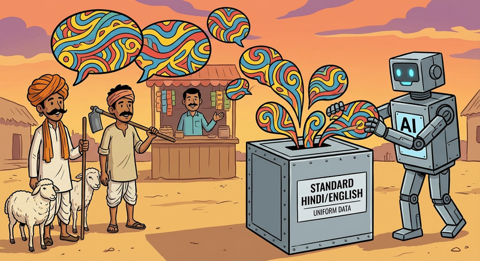
कंप्यूटरों ने अक्सर एक सीमित भाषा रे खजाने माथे ट्रेन करियो जावे जिण सूं वो ही सीमित खजानो एक "मानक (Standard)" रो रूप ले लेवे — जैसे कि बड़े शहरां में बोली जावण वाली भाषा। घणी संभावना है कि अगर थे मारवाड़ी में कोई AI सिस्टम सूं बात करो तो वो थांरी बोली ने समझ नी पावे अर उने "शोर" या "गलत" मान सके। इने स्टैंडर्डाइजेशन बायस (Standardization Bias) केवे, अर ओ लोगां ने आपरी ही जुबान माथे शर्मिंदा महसूस करा सके। [24, 25]。
3.3 बिना पूछ्या लेवणो (Data Sovereignty)
"मच्छर" शोधकर्ता
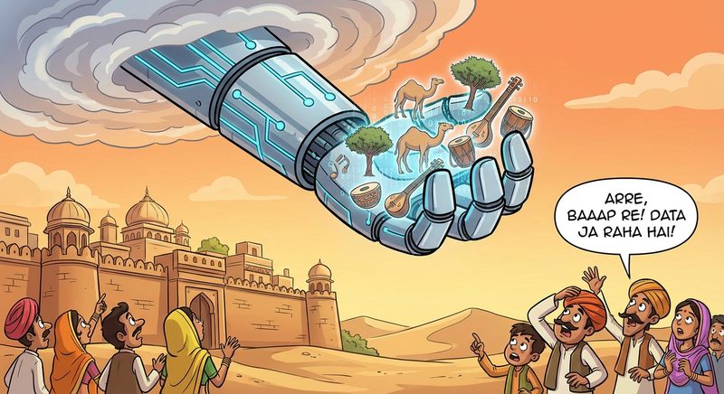
कुछ शोधकर्ता (Researchers) मच्छरों जैसो व्यवहार करे: वे गाँव में आवे, आपरो "खून" (आपरी फोटो, आवाज़ें अर डेटा) चूसे, अर अक्सर एक थोड़ी सी रकम दे'र या उण डेटा रे काम रे बारे में जानकारी दिया बिना ही पाछा चाल्या जावे। आपाणे उणा रे काम रा नतीजा कदे देखण ने कोनी मिले [15]। ओ एक तरियां रो "डेटा कॉलोनियलिज्म (Data Colonialism)" है, जठे बड़ी कंपनियां आपरे सूं बिना पूछे ही आपरो डेटा आपरे सूं ले लेवे अर उणी डेटा रे आधार माथे AI सिस्टम (systems) बणा'र आपाणे या आपरी सरकार ने बेचण रो काम करे। इस वास्ते ओ घणो ज़रूरी है कि आपां आपरा खुद रा AI सिस्टम्स (systems) बणावां जिण सूं आपां आत्मनिर्भर बणा अर आपरे खुद रे गांवां रो विकास होवे। [20, 26]。
आपरी कहाणियाँ रो मालिक कुण है?
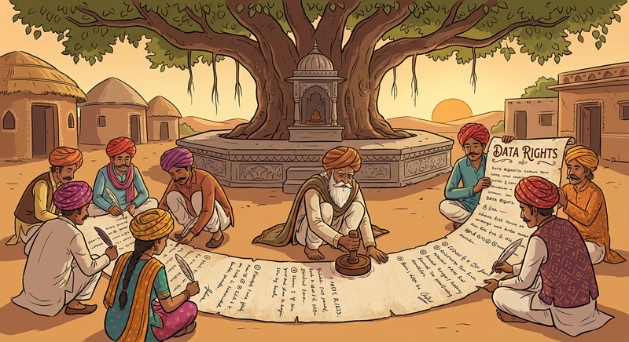
एक सवाल ओ भी है की बड़े AI मॉडल्स द्वारा बतायी जावण वाली राजस्थानी कहाणियाँ रो मालिक कुण है? अगर कोई कंप्यूटर आपरे पुराने गीतों सूं गाणो सीखे, तो उणरे बणाया नया गीतों रो मालिक कुण है — वा कंपनी या वो गाँव जठे वा भाषा जन्मी अर बढ़ी ? फिलहाल, कानून इण माथे साफ़ कोनी अर कंपनियां अक्सर मालिकाना हक ले लेवे। IISc Bangalore रे एक प्रोफेसर ने एक एड़ो तरीको बणायो है जिण सूं अगर आपां खुद आपरा AI सिस्टम (system) बणावा तो उणा ने चोरी करणो मुश्किल होवेला। [27]。
3.4 नाइंसाफ़ी (Social Justice)
भेदभाव अर रूढ़ियाँ (Bias & Stereotypes)
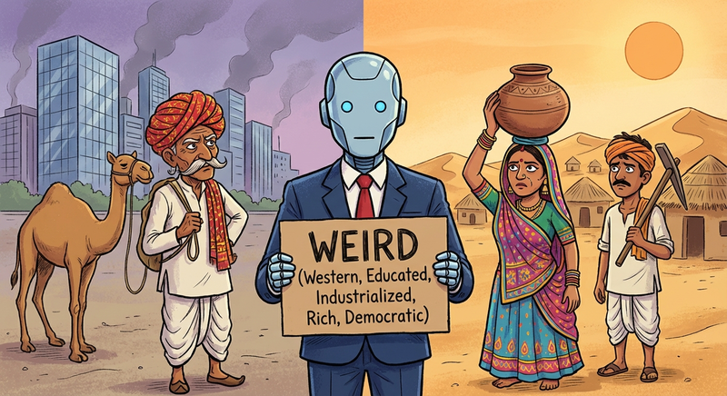
अगर कोई कंप्यूटर पुरानी किताबों सूं सीखे जिण में लिख्यो है कि "लुगाइयां ने रसोई में रेवणो चाइजे," तो वो इने सच मान लेवेला अर लुगाइयां ने नौकरी रे विज्ञापन दिखावण सूं मना कर सके। इने "लिंग बायस" (Gender Bias) या "लैंगिक भेदभाव" केवे [28]। ओ आपाणे दूसरे दर्जे रो नागरिक जैसो भी महसूस करा सके। [29]। ज़्यादातर कंप्यूटर उण लोगां द्वारा ट्रेन (Train) किए जावे जो पश्चिमी, पढ़े-लिखे, औद्योगिक, अमीर अर आपरे सूं घणा अलग (WEIRD) है, अर वे शायद आपरे संस्कारों ने न समझे। [30]。
छिप्या मज़दूर
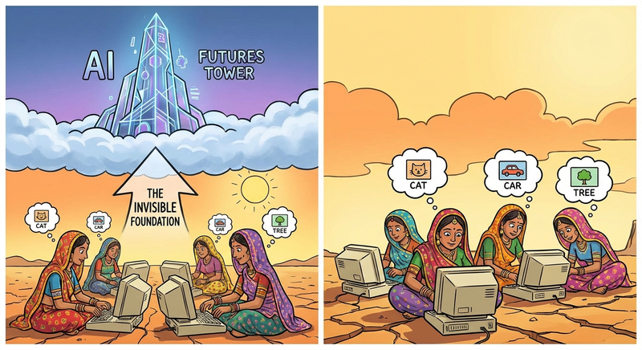
हर "स्मार्ट" कंप्यूटर रे पीछे, अक्सर दूसरे देशों में हज़ारों कम पगार वाळा मज़दूर होवे जिको डेटा (Data) री जाँच कर रया होवे। आपाणे हमेशा पूछणो चाइजे: "इने कुण बणायो, अर काईं उणा ने सही पगार मिली?" ओ "घोस्ट लेबर (Ghost Labor)" उण तकनीक री एक छिपी हुई कीमत है जिणरो आपां इस्तेमाल करा [31, 20]。
3.5 जद औज़ार टूट जावे (Safety)
झूठ बोलता कंप्यूटर (Hallucinations)
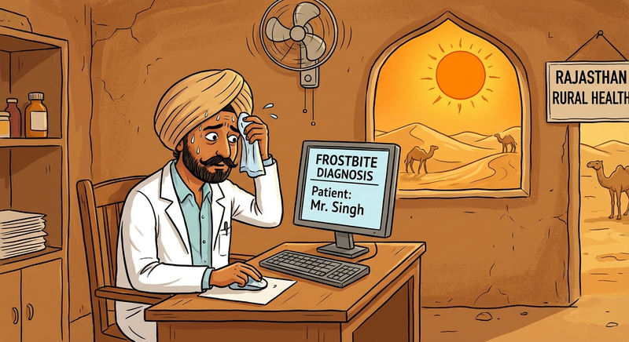
कदे-कदे, कंप्यूटर मनगढ़ंत बातां बणावे पण घणे भरोसे रे साथे बोले। वो नीम या तुलसी रो उपयोग करके कोई बीमारी रो नकली इलाज बता सके जो असल में काम कोनी करे। इने AI विज्ञान री दुनिया में "हैलुसिनेशन (Hallucination)" केवे। कोई भी ज़रूरी सलाह री जाँच हमेशा कोई इंसानी जानकार, जैसे वैद्य या डॉक्टर सूं करणी ज़रूरी है [32, 33]。
धरती ने नुकसान
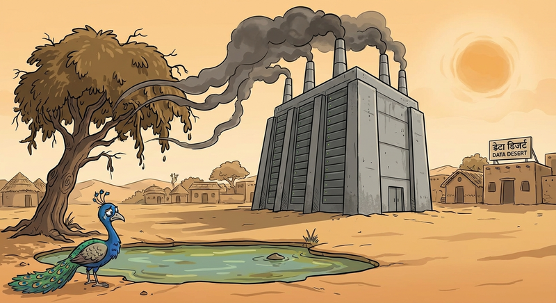
ChatGPT अर Gemini जैसे AI मॉडल्स या इंटरनेट माथे काम आवण वाली घणी सेवाओ रे इस्तेमाल रे वास्ते घणे ताकतवर कम्प्यूटर्स रा समूह बणाया जावे जिने डेटा सेंटर्स (Data Centers) केवे। इन डेटा सेंटर्स में चालण वाळे एक बड़े AI मॉडल ने ट्रेन (Train) करण में घणी बिजली अर पाणी रो इस्तेमाल होवे—कदे-कदे उत्तो जित्तों एक पूरो गाँव एक साल में इस्तेमाल करे। पाणी रो इस्तेमाल उण कंप्यूटर्स ने ठंडो राखण रे वास्ते करियो जावे। आपाणे पूछणो चाइजे कि काईं ओ औज़ार आपरी धरती माथे पड़ण वाली इण कीमत रे लायक है ? इन "प्यासे कंप्यूटरों" री प्यास बुझावण रे वास्ते अक्सर भारत जैसे एशियाई देश ज़्यादा हर्जाना भरे क्यूंकि अठे न केवल पीवण रे पाणी री दिक्कत है बल्कि मौसम भी पश्चिमी देशों रे मुकाबले ज्यादा गरम है। अर इणरो आपरे पर्यावरण माथे गहरा असर पड़े [26]。
IV. सामुदायिक टूलकिट: लगाम आपरे हाथ में लेवणी
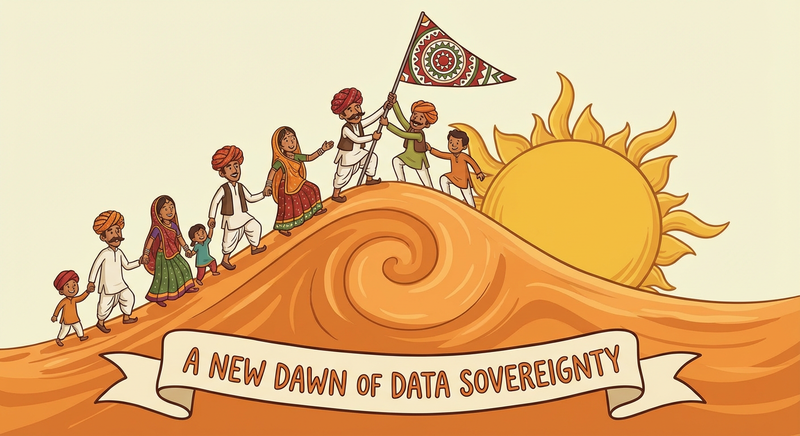
शहर सूं जो भी तकनीक आवे, आपाणे उने बस मान लेवण री ज़रूरत कोनी। आपां चुन सका। आपां बणा सका। आपां "कोनी" कह सका। इने सॉवरेन AI (Sovereign AI) केवे—इणरो मतलब है कि आपां आपरे डेटा (Data) रा ख़ुद राजा अर राणी हाँ। अठे थारे गाँव ने फैसला करण में मदद करण रे वास्ते कुछ औज़ार दिया गया है।
4.1 चेकलिस्ट: शोधकर्ताओं सूं पूछण वास्ते 5 सवाल
जद कोई थारे गाँव में डेटा (फोटो, आवाज़ें, सेहत रिकॉर्ड) इकट्ठा करण आवे, तो उणा सूं ए सवाल पूछो अर लिख में जवाब लो। अगर वे जवाब न दे सके, तो उणा ने आपरो डेटा मत दो।
"इण डेटा रो मालिक कुण है?" (काईं ओ डेटा गाँव रो होवेला, या विदेश री कोई कंपनी रो?)
"थे बदले में काईं देस्यो?" (काईं आपाणे ऐप (App) री एक कॉपी मिलेला? काईं थे आपरे जवानां ने ट्रेन (Train) करोला?)
"काईं आपां 'रुको' कह सका?" (अगर आपां बाद में आपरो मन बदल लेवां, तो काईं आपां आपरो डेटा डिलीट (Delete) कर सका?)
"इने कुण देखे?" (काईं आपरी निजी कहाणियाँ विज्ञापन वालो ने बेची जावेला?)
"काईं थे मच्छर हो?" (काईं थे अठे आपरी मदद करण आया हो, या सिर्फ़ आपरे सूं लेवण अर चले जावण रे वास्ते?)
4.2 डेटा कमेटी (Data Committee) कियाँ बणावा
कणी एक मिनख ने सगळा रे वास्ते फैसला न करण दो। भरोसेमंद लोगां रो एक समूह बणाओ। रीत-रिवाजों री रक्षा करण अर ओ तय करण रे वास्ते कि काईं पवित्र (गुप्त) है, एक बुज़ुर्ग ने शामिल करो। एक जवान ने शामिल करो जिको मोबाइल फोन अर कंप्यूटर ने समझे। ओ पक्को करण रे वास्ते कि लुगाइयां री आवाज़ अर चिंताएं—जैसे पाणी अर सेहत—छूट न जावे, एक लुगाई ने ज़रूर शामिल करो। अर सबसूं ज़रूरी बात, कानूनी काग़ज़ो जैसे अनुबंधों (Contracts) अर समझौतों ने पढ़ण में मदद करण रे वास्ते एक मास्तर या वकील ने शामिल करो।
कमेटी रो काम:
तय करो कि किसो ज्ञान सार्वजनिक (Public) है (कोई भी देख सके)।
तय करो कि किसो ज्ञान सिर्फ समाज वास्ते (Community Only) है (सिर्फ़ आपरे वास्ते)।
तय करो कि किसो ज्ञान पवित्र (Sacred) है (जिने कदे रिकॉर्ड कोनी करियो जावणो चाइजे)।
4.3 आपरा हक
थाणे कणी भी एड़ी तकनीक ने मना करण (Refuse) रो हक है जिकी थारी मदद कोनी करे। थे को-डिज़ाइन (Co-Design) री मांग कर सको, जिणरो मतलब है कि थे बणावण री प्रक्रिया रो हिस्सा हो, न कि सिर्फ़ टेस्ट करण रो। अर सबसूं ज़रूरी बात, थाणे आपरे डेटा (Data) सूं कमाया कणी भी पइसा या मोल सूं लाभ (Benefit) मिलणो चाइजे। अर इणरे वास्ते भी थे आवाज़ उठा सको।
सहयोग प्रोटोकॉल रे वास्ते सॉवरेन AI (Sovereign AI) पोर्टल माथे जाओ।
संदर्भ (References)
[1] Rice, B. T., Rasmus, S., Onders, R., Thomas, T., Day, G., Wood, J., ... & Hiratsuka, V. (2025). Community-engaged artificial intelligence: An upstream, participatory design, development, testing, validation, use and monitoring framework for artificial intelligence and machine learning models in the Alaska Tribal Health System. Frontiers in Artificial Intelligence, 8, 1568886.
[2] Berditchevskaia, A., Malliaraki, E., & Peach, K. (2021). Participatory AI for humanitarian innovation: A briefing paper. Nesta.
[3] Hirmer, S., Leonard, A., Tumwesige, J., & Conforti, C. (2021). Building representative corpora from illiterate communities: A review of challenges and mitigation strategies for developing countries. In Proceedings of the 16th Conference of the European Chapter of the Association for Computational Linguistics: Main Volume (pp. 2176–2189).
[4] Vaughn, L. M., & Jacquez, F. (2020). Participatory research methods – Choice points in the research process. Journal of Participatory Research Methods, 1(1).
[5] Hsu, Y.-C., Cross, J., Dille, P., Tasota, M., Dias, B., Sargent, R., ... & Nourbakhsh, I. (2020). Empowering local communities using artificial intelligence. Patterns, 1, 100109.
[6] Rajagopalan, R. M., Cakici, J., & Bloss, C. S. (2024). A vision for empirical ELSI along the R&D pipeline. AJOB Empirical Bioethics, 15(2), 81–86.
[7] BHASHINI. (2025). Field guide for inclusive language AI in India (1st ed.). Digital India Bhashini Division.
[8] Venkatesh, D., El Ters, E., Smith, H., Traista, L., & Lingayat, V. P. (2024). AI and the Global South: Exploring the role of civil society in AI decision-making. CARE International UK & Accenture.
[9] Ada Lovelace Institute. (2021). Participatory data stewardship: A framework for involving people in the use of data.
[10] Wearne, S., Hubbard, E., Jónás, K., & Wilke, M. (2023). A learning journey into contemporary bioregionalism. People and Nature, 5, 2124–2140.
[11] Nekoto, W., Marivate, V., Matsila, T., Fasubaa, T., Kolawole, T., Fagbohungbe, T., ... & Bashir, A. (2020). Participatory research for low-resourced machine translation: A case study in African languages. In Findings of the Association for Computational Linguistics: EMNLP 2020 (pp. 2144–2160).
[12] Faisal, F., Wang, Y., & Anastasopoulos, A. (n.d.). Dataset geography: Mapping language data to language users. George Mason University.
[13] Cooper, N., Heldreth, C., & Hutchinson, B. (n.d.). “It’s how you do things that matters”: Attending to process to better serve Indigenous communities with language technologies.
[14] Dossou, B. F. P., & Aïdasso, H. (n.d.). Towards open-ended discovery for low-resource NLP. McGill University & École de technologie supérieure.
[15] Le Ferrand, E. (2023). Leveraging speech recognition for interactive transcription in Australian Aboriginal communities [Doctoral thesis, Charles Darwin University].
[16] Bird, S. (2020). Sparse transcription. Computational Linguistics, 46(4), 713–744.
[17] Eticas Foundation. (n.d.). Community led AI audit [References list].
[18] Guerrero Millan, C., Nissen, B., & Pschetz, L. (2024). Cosmovisión of data: Design of a repository of Indigenous knowledge with the Masewal people. In Proceedings of the CHI Conference on Human Factors in Computing Systems (pp. 1–18).
[19] Qadri, R., Davani, A. M., Robinson, K., & Prabhakaran, V. (n.d.). Risks of cultural erasure in large language models. Google.
[20] Ògúnrèmí, T., Nekoto, W. O., & Samuel, S. (2023). Decolonizing NLP for “low-resource languages”: Applying Abebe Birhane’s relational ethics. GRACE: Global Review of AI Community Ethics, 1(1).
[21] Lewis, J. E. (Ed.). (2020). Indigenous protocol and artificial intelligence position paper. Indigenous Protocol and Artificial Intelligence Working Group and the Canadian Institute for Advanced Research.
[22] Sayers, D., Sousa-Silva, R., Höhn, S., et al. (2021). The dawn of the human-machine era: A forecast of new and emerging language technologies. University of Jyväskylä; COST Action CA19102.
[23] Bird, S. (2024). Must NLP be extractive? In Proceedings of the 62nd Annual Meeting of the Association for Computational Linguistics (pp. 14915–14929).
[24] Flavelle, D., & Lachler, J. (n.d.). Strengthening relationships between Indigenous communities, documentary linguists, and computational linguists in the era of NLP-assisted language revitalization (pp. 25–34). University of Alberta.
[25] Nguyen, D., Doğруöz, A. S., Rosé, C. P., & De Jong, F. (2016). Computational sociolinguistics: A survey. Computational Linguistics, 42(3), 537–593.
[26] Bird, S. (2025). Big AI and the metacrisis [Manuscript submitted for publication].
[27] Rastogi, S., & Maini, P. (2025). STAMP your content: Proving dataset membership via watermarked rephrasings. In Proceedings of the 42nd International Conference on Machine Learning (PMLR 267).
[28] Bhatt, S., Dev, S., Talukdar, P., Dave, S., & Prabhakaran, V. (2022). Re-contextualizing fairness in NLP: The case of India. In Proceedings of the 2nd Conference of the Asia-Pacific Chapter of the Association for Computational Linguistics and the 12th International Joint Conference on Natural Language Processing (pp. 727–740).
[29] Rozmysłowicz, T. (2024). The politics of machine translation: Reprogramming translation studies. Perspectives: Studies in Translation Theory and Practice, 32(3), 493–507.
[30] Seth, A., Ahuja, S., Bali, K., & Sitaram, S. (2024). DOSA: A dataset of social artifacts from different Indian geographical subcultures. Proceedings of the 2024 Joint International Conference on Computational Linguistics, Language Resources and Evaluation (LREC-COLING 2024), 5323–5337.
[31] Guest, O. (n.d.). What does ‘human-centred AI’ mean? Radboud University.
[32] Centre for Responsible AI. (n.d.). PAI case studies. IIT Madras.
[33] Regnauld, A. (2022). The event/machine of neural machine translation? Journal of Aesthetics and Phenomenology, 9(2), 141–154.